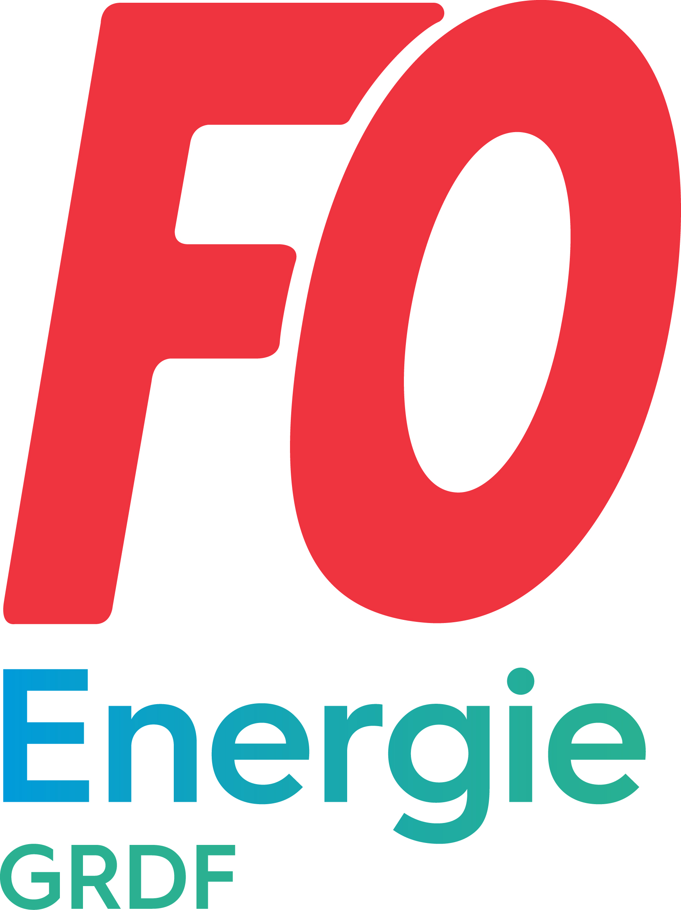

Titre de confiance — Élections CSE 2027Périmètre : FONCTIONS CENTRALES · 52 sites en France

Nom / PrénomLOPES, Mickaël
FonctionPrévention des risques professionnels
Site de rattachementCHAMBÉRY (73)
Citoyen GRDF depuis2009 | FO : 2016
Signe particulierMoniteur de boxe française 🥊
Visas du parcours
✓TerrainTechnicien gaz 2009-2019 : vos métiers, connus de l'intérieur.
✓TransmissionFormateur Energy Formation, puis formateur des militants FO.
✓PréventionRPS & sécurité routière : ses combats au CSE.
« On rentre chez soi entier, le soir. C'est pour ça que je me bats. »
NOVEMBRE 2027
Validité : 4 ans de mandat
Renouvellement : par votre vote
Votez FOcontrôle validé
Contrôle en ligne
P<FOGRDF<<LOPES<<MICKAEL<<PREVENTION<<<<<<<<
2027CSE<<VOTEZ<FO<<FONCTIONS<CENTRALES<<<<<<